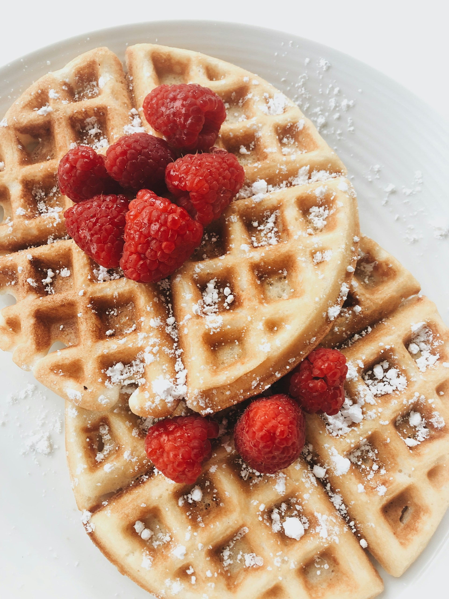

Classic Waffles

Description
Classic waffles are golden, crisp on the outside,
and soft and fluffy on the inside—perfect for a comforting
breakfast or brunch. Lightly sweet and buttery, they pair effortlessly with syrup,
fruit, or your favorite toppings.
- Crisp exterior with a fluffy center
- Lightly sweet, buttery flavor
- Perfect for breakfast or brunch
Ingredients
- 2 cups all-purpose flour
- 1 teaspoon salt or to taste
- 4 teaspoons baking powder
- 2 tablespoons white sugar
- 2 large eggs
- 1 ½ cups warm milk
- ⅓ cup butter, melted
- 1 teaspoon vanilla extract
Steps
- Prepare all ingredients before starting.
- In a large bowl, whisk together the flour, salt,
baking powder, and sugar. Set aside.
Preheat your waffle iron to your preferred setting.
- In a separate bowl, beat the eggs, then mix in the milk,
melted butter, and vanilla extract.
- Pour the wet ingredients into the dry ingredients and stir
until just combined.
- Pour or ladle the batter into the preheated waffle iron.
- Cook until the waffles are golden brown and crisp.
- Serve warm and enjoy.
Home